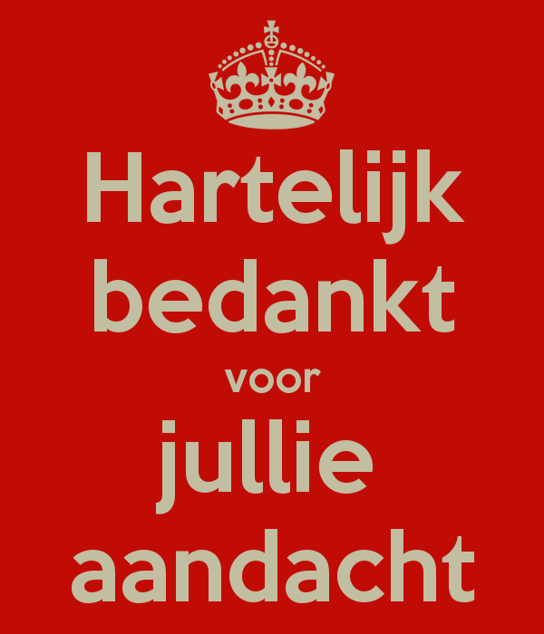

‘Topic modeling’ van de Nederlandse Troonredes
Enrique Manjavacas
http://emanjavacas.github.io/slides/
Inhoudstafel
1 Inleiding
1.1 Altijd meer tekst!
Gebruiker-gegenereerde inhoud
Recensies (Amazon, filmrecensies, etc…)
Blogs
Microblog (Twitter)
Chat
…
-> Er zit heel veel belangrijke informatie in dit soort teksten. Maar we kunnen het niet meer manueel verwerken.
1.2 Automatisch Tekstbegrip
Technologieën die grote hoeveelheden tekst kunnen analyseren en in verschillende groepen classificeren.
1.2.1 Voorbeelden
- Sentiment-analyse van teksten
{kind=link}
- Semantische nabijheid tussen documenten

- Modelering van de ontwerpen in een tekst (Topic Modeling)
2 Topic models
2.1 Wat is Topic Modeling?
- Een algoritme dat de meest relevante thema’s in een collectie van documenten kan extraheren
- Welke topics zitten er in de hele collectie van documenten.
- Welke topics zitten er in elk document.
- Een voorstelling van de structuur van elk topic. (Meer hierover later)
- Het is een recente ontwikkeling (2002) in het gebied van ‘Computertaalkunde’.
- Het wordt altijd vaker en door meer wettenschappers gebruikt.
2.2 Wat is een topic (onderwerp)?
- Schijnbaar eenvoudige vraag maar eigenlijk niet.
- Hoe kunnen we topics voorstellen, zo dat de computer ermee kan werken.
- Verzameling van woorden die men in een tekst over een bepaald thema verwacht vaker te ontmoeten.
- Formeel is een topic een waarschijnlijkheidsverdeling over woorderen.
| Topic 1 | Topic 2 |
|---|---|
| (0.039) walvis | (0.071) huwelijk |
| (0.029) zee | (0.050) geluk |
| (0.017) schip | (0.023) dochter |
| (0.016) walvissen | (0.019) vereniging |
| (0.016) lucht | (0.014) hart |
| (0.014) nacht | (0.011) vrouw |
| (0.013) zeeman | (0.008) wensen |
| (0.009) haai | (0.007) aanzoek |
| (0.008) harpoen | (0.007) liefde |

2.3 Wat is een document?
- Schijnbaar een triviale vraag maar eigenlijk niet.
- Verzameling of mengeling van ‘topics’. Elk ‘topic’ is in elk document in bepaalde mate aanwezig.
| Document 1 | Document 2 | Document 3 | |
|---|---|---|---|
| Topic 1 | 0.54 | 0.03 | 0.15 |
| Topic 2 | 0.06 | 0.65 | 0.04 |
| Topic 3 | 0.13 | 0.15 | 0.09 |
| Topic 4 | 0.07 | 0.07 | 0.45 |
| Topic 5 | 0.20 | 0.10 | 0.27 |
3 Troonredes
De Troonredes (wikipedia)
3.1 Inhoud
-> Beschrijving en samenvatting van de belangrijkste gebeurtenissen van het afgelopene jaar.
-> Plannen en maatregelen voor het nieuwe jaar.
3.2 Bron
3.3 De topic model
3.3.1 Voorbereiding van de teksten
- Normalisatie
Mogten onverhoopt de belangen van het Vaderland eene nog grootere krachtsontwikkeling vereischen, dan is daartoe het noodige, van nu af aan, met vol vertrouwen op de gezindheid der Natie, door Mij voorbereid.
- Functieworden
In geen land ter wereld is de beschikbare ruimte per inwoner zo gering als in Nederland. Bovendien groeit onze bevolking snel. Hierdoor en door de stijging van de welvaart die nieuwe behoeften schept, zien wij ons voor steeds grotere problemen geplaatst.
3.3.2 Aantal topics
- De computer weet niet hoeveel topics erin zitten.
- Het wordt nog altijd onderzocht wat de beste manier is om hat aantal topics te bepalen.
3.3.3 Visualisering
- Nadat we een topic model hebben gebouwd, kunnen we het gewicht van elk topic door de jaren heen visualiseren.
| Topic | Periode | Belangrijke woorden |
|---|---|---|
| 2 | De Willem’s | edel, mogenden, vaderland, bezittingen, grondwet, wetgeving, scheepvaart, zee |
| 1 | Wilhelmina | suriname, curaçao, nijverheid, einde, oorlog |
| 4 | Juliana | ontwikkeling, economische, europese, internationale, bedrijfsleven |
| 3 | Beatrix | burgers, sociale, europese, veiligheid, werkgelegenheid, werkloosheid, groei, bedrijven, unie, ruimte |
3.3.4 Interpretatie. Wat zit er in elke topic?
Vaste uitdrukkingen
- Het strekt mij tot genoegen
- Edel mogenden heren
Verschillende benoemingen voor (min of minder) hetzelfde
- bevolking -> burgers
- nijverheid
Thema’s met verschillend politiekbelang
- suriname, curaçao
- wereld oorlog
- groei, bedrifsleven
- veiligheid
- werkgelegenheid, werkloosheid, werknemers
- europese unie
3.3.5 Conclusies
- Computers kunnen ons helpen met het verwerken van grote hoeveelheden tekst.
- Het is moeilijk om de topics in de Troonredes te modeleren.
- Niettemin komen we tot een snel begrip van de grootste verschillen tussen de perioden.
4 Einde

4.1 Topics
Topic 0
0.015*koningin + 0.010*kabinet + 0.009*kamer + 0.008*naam + 0.007*verkiezingen + 0.006*buitengewone + 0.005*openen + 0.004*zaken + 0.004*beleid + 0.004*opgedragen + 0.004*troonrede + 0.004*overleg + 0.004*voeren + 0.004*wens + 0.004*problemen + 0.003*grondwet + 0.003*heil + 0.003*geworden + 0.003*toekomst + 0.003*wetsontwerp + 0.003*koninkrijk + 0.003*spoedig + 0.003*bereid + 0.003*regeringsverklaring + 0.003*meerderheid + 0.003*herziening + 0.003*oost + 0.003*opgave + 0.003*geroepen + 0.003*parlementaire + 0.003*gelukkig + 0.003*daarvoor + 0.003*economisch + 0.003*werkgelegenheid + 0.003*vaderland + 0.003*noodige + 0.002*dochter + 0.002*hoogst + 0.002*gehouden + 0.002*kiesrecht
Topic 1
0.009*wetsontwerp + 0.008*herziening + 0.006*economische + 0.005*nijverheid + 0.005*wijziging + 0.005*bevolking + 0.005*ingediend + 0.005*voorbereiding + 0.005*wettelijke + 0.004*aard + 0.004*gebied + 0.004*voldoening + 0.004*versterking + 0.004*bevordering + 0.004*voorbereid + 0.004*einde + 0.004*omstandigheden + 0.004*suriname + 0.004*maat + 0.004*vriendschappelijken + 0.003*financiële + 0.003*gevolgen + 0.003*curaçao + 0.003*ontwerpen + 0.003*spoedig + 0.003*ontwerp + 0.003*oorlog + 0.003*toewijding + 0.003*overzeesche + 0.003*uitvoering + 0.003*internationale + 0.003*weg + 0.003*druk + 0.003*leven + 0.003*voorstel + 0.003*dankbaarheid + 0.003*opnieuw + 0.003*moeilijkheden + 0.003*kracht + 0.003*aanhangige
Topic 2
0.016*edel + 0.011*mogenden + 0.008*vergadering + 0.006*vaderland + 0.005*bezittingen + 0.005*grondwet + 0.004*nijverheid + 0.004*koning + 0.004*hoop + 0.004*medewerking + 0.004*geheel + 0.003*landbouw + 0.003*buitengewone + 0.003*wetboek + 0.003*voortduring + 0.003*invloed + 0.003*scheepvaart + 0.003*zee + 0.003*rust + 0.003*tegenwoordige + 0.003*ontwerp + 0.003*wetgeving + 0.003*landmacht + 0.003*onderscheidene + 0.003*takken + 0.003*ijver + 0.003*bestuur + 0.003*welvaart + 0.003*genoegen + 0.003*dien + 0.003*einde + 0.003*was + 0.003*oogst + 0.003*nationale + 0.003*loop + 0.003*wetten + 0.003*orde + 0.003*sedert + 0.003*ontwerpen + 0.003*werkzaamheden
Topic 3
0.008*samenleving + 0.008*overheid + 0.007*burgers + 0.007*economische + 0.006*wil + 0.006*sociale + 0.005*verantwoordelijkheid + 0.005*europese + 0.005*kwaliteit + 0.005*beleid + 0.005*economie + 0.005*veiligheid + 0.004*werkgelegenheid + 0.004*groei + 0.004*toekomst + 0.004*internationale + 0.004*kabinet + 0.004*samenwerking + 0.004*bedrijven + 0.004*problemen + 0.003*ontwikkeling + 0.003*wereld + 0.003*ruimte + 0.003*volgend + 0.003*extra + 0.003*europa + 0.003*inspanningen + 0.003*gericht + 0.003*unie + 0.003*herstel + 0.003*maatschappelijke + 0.003*werkloosheid + 0.003*werknemers + 0.003*samen + 0.003*weer + 0.003*inkomen + 0.003*financiële + 0.003*bijdrage + 0.003*versterking + 0.003*jongeren
Topic 4
0.011*ontwikkeling + 0.009*economische + 0.008*beleid + 0.008*samenwerking + 0.007*gebied + 0.006*europese + 0.005*overleg + 0.005*wetsontwerp + 0.005*internationale + 0.004*gericht + 0.004*koninkrijk + 0.004*bedrijfsleven + 0.004*spoedig + 0.004*noodzakelijk + 0.003*wereld + 0.003*zittingsjaar + 0.003*streven + 0.003*sociale + 0.003*raad + 0.003*stand + 0.003*maat + 0.003*inzake + 0.003*verhoging + 0.003*betekenis + 0.003*moeilijkheden + 0.003*toekomst + 0.003*economisch + 0.003*bevolking + 0.003*gemeenschap + 0.003*werkgelegenheid + 0.003*ontwerp + 0.003*toenemende + 0.003*kracht + 0.003*woningen + 0.002*groei + 0.002*geboden + 0.002*wil + 0.002*verenigde + 0.002*herstel + 0.002*antillen